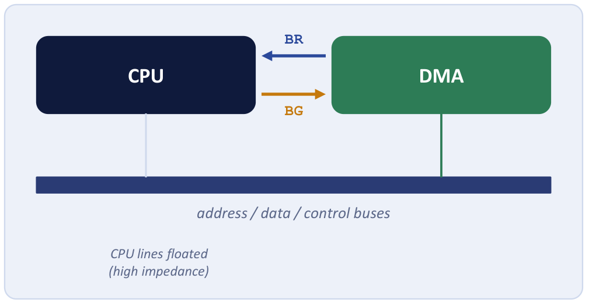
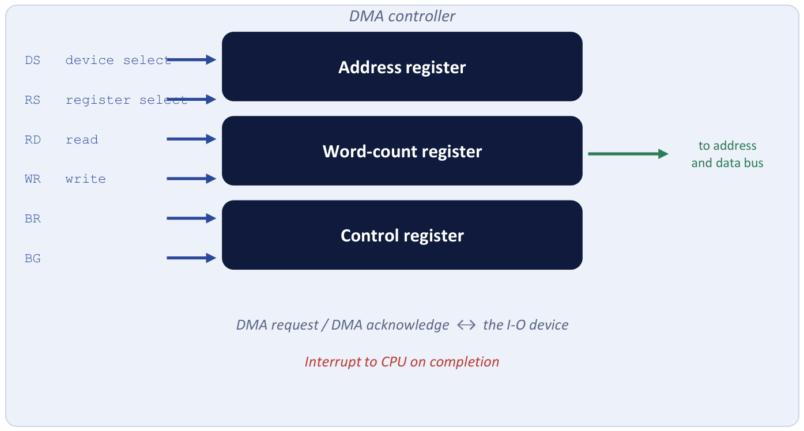
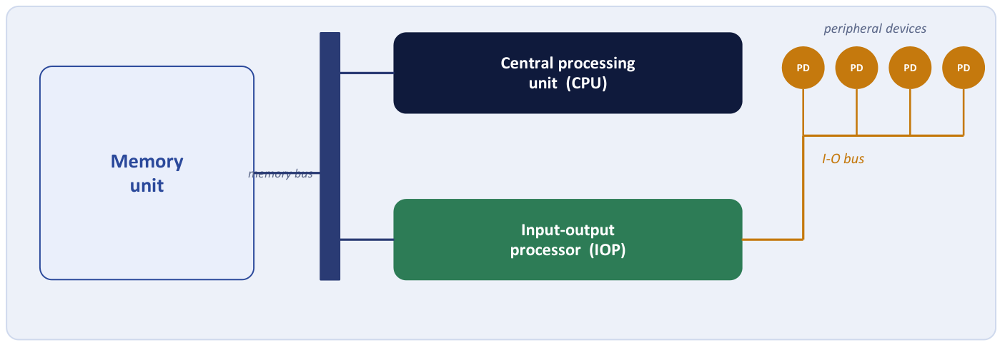

Chapter 21: Direct Memory Access and I/O Processors¶
Taking the CPU out of the data path altogether: bus request and grant, the DMA controller, burst and cycle stealing, and the I/O processor
The previous chapter ended with two modes of transfer and a problem. In programmed I/O the CPU wastes its time waiting. With interrupts it no longer waits, but it still handles every single word, and for a fast device that is too much: each word costs a context switch into a service routine and back. The transfer of data between a fast storage device such as a magnetic disk and memory is often limited by the speed of the CPU, not of the device.
The answer is to remove the CPU from the path and let the device manage the memory buses directly. This is direct memory access (DMA). A small controller, which needs far less intelligence than a processor, moves a whole block between the device and memory by itself, and the CPU is involved exactly twice: once at the start, to set the transfer up, and once at the end, when a single interrupt says it is done. This chapter explains how the CPU hands over the buses, what the DMA controller contains, the two ways it can use the bus, how much time and CPU effort DMA saves, and how the idea is taken one step further in the I/O processor, which executes whole I/O programs of its own.
What you will learn
- Explain why DMA is needed and compare the CPU effort of interrupt-driven I/O and DMA for a block.
- Describe the bus request / bus grant handshake, including why the CPU finishes its bus cycle and floats its lines.
- Describe the DMA controller: address register, word-count register, control register and its signals, and how a transfer is set up and completed.
- Distinguish burst transfer from cycle stealing and choose between them.
- Compute DMA transfer times, register contents and interrupt counts.
- Compare programmed I/O, interrupt-initiated I/O and DMA, and describe the I/O processor (channel).
21.1 Why DMA?¶
Consider a disk that delivers 4 million words a second. With interrupt-driven I/O each word costs a context switch of perhaps 50 instructions. That is 200 million instructions a second spent purely on overhead, most of a processor, to move data it is not even using. Worse, every word makes two trips: from the device into a CPU register, and from the register out to memory. DMA stops routing the data through the CPU at all.
Example 21.1: Comparing the I/O overhead for one block
Problem. A disk delivers a 4 KB block. Under interrupt-initiated I/O each 2-byte word causes one interrupt. How many interrupts does the block cause, and how does DMA improve on that?
Solution. The block has \(4096/2 = 2048\) words, so there are 2048 interrupts, that is, 2048 context switches into the service routine. With DMA the controller moves all 2048 words directly and raises a single interrupt at completion.
Answer. 2048 interrupts against 1: a reduction of about 2000 times in CPU interruptions.
Example 21.2: The cost of one interrupt per word at disk speed
Problem. A disk delivers 4 million words per second, and interrupt-driven I/O costs about 50 instructions of overhead per word. How many instructions per second go on overhead?
Solution. \(4 \times 10^6 \text{ words/s} \times 50 \text{ instructions/word} = 2 \times 10^8\) instructions per second.
Answer. 200 million instructions per second, most of the capacity of an ordinary processor, spent on moving data it is not itself using. DMA removes all of it except the setup and the one completion interrupt.
This is why copying a large file does not freeze your game. The DMA controller shovels the data straight into memory while the CPU keeps rendering frames. The CPU only set up the transfer (source, destination, count) and will get one interrupt when it finishes. Without DMA, every few bytes would drag the processor into an interrupt service routine, and the whole machine would stutter. DMA is the reason bulk data movement and interactive work coexist smoothly.
There is, however, a cost. The DMA controller and the CPU both want the memory bus. Since peripheral transfers are slower than processor transfers, DMA cycles are relatively infrequent, but they do delay the CPU when they occur.
21.2 Handing over the buses: bus request and bus grant¶
To let the DMA controller drive memory, the CPU must first release the address, data and control buses. Two control signals do this, and the exchange has five steps (Figure 21.1).

- BR, bus request. The DMA controller asserts Bus Request to ask the CPU for control of the buses.
- The CPU finishes its bus cycle. It completes the transfer in progress; it never abandons one half-done.
- The CPU floats its lines. It places its address, data and read/write lines in the high-impedance (tri-state) condition, effectively disconnecting itself from the buses.
- BG, bus grant. The CPU asserts Bus Grant. The DMA controller now owns the buses and drives memory directly.
- Release. When the transfer is done, the controller disables BR; the CPU disables BG and takes the buses back.
Two details deserve a word. First, why must the CPU finish its bus cycle before granting the bus? A memory access already under way cannot be interrupted half-way: the address is on the lines and the data is in flight. The CPU therefore honours BR at the next cycle boundary, exactly as it recognises interrupts only between instructions. Second, why float the lines? Two drivers on one bus would short-circuit. Floating the CPU's outputs makes it electrically safe for the DMA controller to drive the same lines.
The CPU is not stopped during DMA
It gives up the bus, and often only for the cycles DMA actually uses. It can keep executing instructions out of its cache, which needs no bus, the entire time, and it stalls only when it itself needs the bus while DMA holds it. DMA steals bus cycles, not the processor's ability to compute. The controller is said to become the bus master for as long as it needs, and the CPU is a bystander.
21.3 The DMA controller¶
The DMA controller is, in effect, a very simple processor with just enough logic to count and to drive an address. Figure 21.2 shows its block diagram. It looks to the CPU like any other I/O interface: the CPU selects it and reads or writes its registers through the data bus, using the DS (device select) and RS (register select) lines together with the RD and WR lines. BR and BG are its two connections to the CPU's bus arbitration, and two further wires, DMA request and DMA acknowledge, run to the I/O device: the device says it has a word ready (or needs one), and the controller tells the device that the transfer is happening now. When the transfer is finished it also raises an interrupt to the CPU.

It holds three registers.
| Register | Holds | What happens to it |
|---|---|---|
| Address register | the memory address of the next word | incremented (automatically) after every word |
| Word-count register | the number of words still to move | decremented after every word; zero ends the transfer |
| Control register | the direction (read or write) and the mode (burst or cycle stealing); the start bit | written once by the CPU at setup |
Table 21.1. The three registers of a DMA controller.
The word count is a countdown, and the address is a bookmark: two counters do all the work. One says where the next word goes and steps forward automatically; the other says how many are left and steps down to zero. When the countdown reaches zero the controller raises its interrupt and stops. No intelligence is needed beyond that, which is why a DMA controller is far simpler and cheaper than a processor.
A transfer is carried out in five steps:
- The CPU programs the controller like any other I/O interface: it writes the starting memory address, the number of words and the direction into the three registers, and issues the start command. Then it goes back to its own work.
- The controller raises BR.
- The CPU finishes its current bus cycle and replies BG, releasing the buses.
- The controller moves words between device and memory, stepping the address up and the count down.
- When the count reaches zero, the controller releases the buses and interrupts the CPU to say the block is complete.
Example 21.3: What the registers hold after 100 words
Problem. A DMA controller is set up with address 2000 and word count 512. What are the two registers holding after 100 words have moved, and when does the transfer end?
Solution. The address register increments once per word: \(2000 + 100 = 2100\). The word-count register decrements once per word: \(512 - 100 = 412\). The transfer ends when the count reaches 0, after the 512th word, when the address register will hold \(2000 + 512 = 2512\), just past the block.
Answer. Address 2100, word count 412; the transfer ends when the count reaches 0.
A footnote on caches: because DMA reads and writes main memory directly, it cares whether main memory is up to date. A write-back cache leaves memory temporarily stale, so a DMA read could fetch an old value; this is one reason write-through is required whenever a DMA controller reads memory, and one source of the cache-coherence problems that arise whenever more than one device can see the same data.
21.4 Burst transfer and cycle stealing¶
Once the controller owns the bus there are two ways to use it.
Burst (block) transfer. The controller keeps the bus and transfers the entire block in one go. It is the fastest possible transfer, but the CPU is locked out of memory for the whole burst, and so is every other device that might need the bus.
Cycle stealing. The controller transfers one word, returns the bus to the CPU, then requests it again for the next word. It "steals" occasional memory cycles, in cycles the CPU was not using or can spare, so the CPU stays responsive and is only slowed a little. The transfer is slightly slower overall.
| Point | Burst transfer | Cycle stealing |
|---|---|---|
| Bus use | held until the whole block is transferred | one word, then released |
| CPU during the transfer | cannot use the bus for the whole block | runs between words, slightly delayed each time |
| Transfer speed | fastest for the block (no re-arbitration) | slower (the bus must be requested for each word) |
| Latency imposed on the CPU | one long, large gap | many short, tiny gaps |
| Suits | fast devices: a disk sector, a network frame | slower devices, and systems that must stay responsive |
Table 21.2. Burst transfer and cycle stealing.
If burst is the fastest, why would any system choose cycle stealing? Because "fastest for the transfer" is not "best for the whole system". A long burst can lock the CPU, and every other device, off the bus for a noticeable stretch, hurting responsiveness and, worse, risking data loss for another real-time device that needed the bus meanwhile. Cycle stealing trades a slightly slower transfer for a system that stays responsive and fair, which is the right call whenever the device can tolerate it. Burst is normal for disk block reads, where the block must arrive as one unit; cycle stealing suits devices that produce words at a steady, moderate rate. A slow device in burst mode would hold the bus idle between its own words, stalling the CPU for no gain. The word "stealing" is exactly right: the CPU is not stopped, it is merely slowed, as though someone had taken the occasional cycle from it.
21.5 Putting numbers on DMA¶
Example 21.4: A DMA transfer, with numbers
Problem. A DMA controller transfers 512 words to memory. Its address register starts at 2000 and the memory cycle time is 100 ns. How long does the transfer take in burst mode, what is the final value of the address register, and how many interrupts does the CPU receive?
Solution.
- Time: burst mode moves one word per memory cycle with no arbitration between words, so \(512 \times 100 \text{ ns} = 51\,200 \text{ ns} = 51.2\) µs.
- Address register: incremented once per word, so \(2000 + 512 = 2512\).
- Interrupts: one, when the word count reaches zero. Interrupt-driven I/O would have caused 512 of them.
For comparison, with interrupt-driven I/O at 2 µs per context switch the same block would cost about \(512 \times 2 = 1024\) µs of CPU time, twenty times as much, all of it the CPU's.
Answer. 51.2 µs; address register 2512; one interrupt.
Example 21.5: DMA against interrupts at 3 µs per word
Problem. A DMA controller moves 1024 words with a memory cycle of 80 ns. Give the burst-mode transfer time and the number of interrupts, and compare with interrupt-driven I/O that costs 3 µs of CPU time per word.
Solution. Burst: \(1024 \times 80 \text{ ns} = 81\,920 \text{ ns} \approx 82\) µs, with one interrupt. Interrupt-driven: \(1024 \times 3\) µs \(= 3072\) µs of CPU time and 1024 interrupts. The ratio is \(3072/82 \approx 37\).
Answer. 82 µs and one interrupt, against 3072 µs of CPU time and 1024 interrupts: about 37 times as much CPU time for interrupts, none of it doing the machine's real work.
Example 21.6: How much of the memory bandwidth does cycle stealing take?
Problem. A disk moves 2048 words by cycle stealing, one word every 2 µs, and a memory cycle is 100 ns. What fraction of the memory bandwidth does the transfer take, how long does it last, and how does that compare with a burst transfer?
Solution. Each word steals exactly one memory cycle of 100 ns, once every 2 µs \(= 2000\) ns, so the fraction taken is \(100/2000 = 0.05 = 5\%\). The whole transfer lasts \(2048 \times 2\) µs \(= 4096\) µs \(= 4.096\) ms. Under burst transfer the same 2048 words would move in \(2048 \times 100 \text{ ns} = 204.8\) µs, far faster, but the CPU would be shut out of memory for the whole of it.
Answer. 5 per cent of the bandwidth for 4.096 ms. The CPU keeps 95 per cent of the memory bandwidth throughout and simply runs a little slower. That is the trade the designer has to make.
Example 21.7: Fraction of cycles stolen
Problem. A device transfers data at 2 MB/s using DMA in cycle-stealing mode. Each DMA memory cycle is 500 ns and moves 2 bytes. What fraction of the memory cycles are stolen from a CPU that would otherwise use the bus every 500 ns continuously?
Solution. 2 MB/s at 2 bytes per cycle is \(10^6\) transfers per second, one every 1 µs. The CPU would use the bus every 500 ns, that is, \(2 \times 10^6\) cycles per second. The DMA takes \(10^6\) of them, so it takes every second 500-ns cycle.
Answer. \(10^6 / (2 \times 10^6) = 50\%\) of the cycles are stolen.
Example 21.8: Streaming from an SSD
Problem. Streaming a 4K video from an SSD moves hundreds of megabytes per second into memory. Explain why the system uses DMA rather than interrupt-initiated I/O, roughly how many interrupts each approach would generate, and what the CPU is free to do meanwhile. Assume 200 MB/s, 2-byte words, and DMA blocks of 64 KB.
Solution. At 200 MB/s and 2 bytes per word the stream is \(10^8\) words per second. Interrupt-initiated I/O would need about \(10^8\) interrupts per second, each a context switch, which would swamp the CPU. With DMA in 64 KB blocks there is one interrupt per block: \(200 \times 10^6 / 65\,536 \approx 3000\) interrupts per second, about \(30\,000\) times fewer. During each transfer the CPU is free to decode and render the video, run other programs, and respond to the user.
Answer. About \(10^8\) interrupts per second without DMA against about 3000 with it. The CPU is left free for decoding and rendering. The exact figures depend on the assumed word and block size; the ratio does not.
21.6 The three modes of transfer compared¶
We can now compare all three modes of transfer, the table that examinations ask for.
| Feature | Programmed I/O | Interrupt-initiated I/O | DMA |
|---|---|---|---|
| Who controls and moves the data | the CPU, word by word | the CPU inside the ISR, word by word | the DMA controller, the whole block |
| CPU while waiting | busy-waiting: it polls the flag | free: it runs other programs | free; it only releases bus cycles |
| CPU interventions | every word, plus all the polling | every word (one interrupt each) | once per block |
| Data path | device, CPU register, memory | device, CPU register, memory | device to memory directly |
| Speed | slowest use of the CPU | moderate | fastest |
| Hardware cost | lowest | interrupt logic needed | a DMA controller and bus arbitration |
| Best for | simple, slow devices; small systems | moderate-speed devices: keyboards, printers | high-speed block devices: disks, network cards, graphics |
Table 21.3. The three modes of transfer.
In one sentence: each mode buys the CPU more freedom at the price of more hardware. Programmed I/O costs nothing but the CPU's entire attention; interrupts cost some logic and free it from waiting; DMA costs a controller and frees it from the data itself. When asked to compare them, give the table, then the one-line reason: the three modes differ in how often the CPU must intervene: every word plus waiting, every word without waiting, or once per block.
Note that programmed I/O is not "slow" in the transfer itself, which is as fast as any other method; what it wastes is the CPU's time. Nor is DMA entirely interrupt-free: it still needs one interrupt, at completion.
21.7 The input-output processor¶
A DMA controller must be told what to do for every block: where it starts, how many words, in which direction. The next step in freeing the CPU is the input-output processor (IOP), a processor in its own right, with direct memory access, that executes I/O programs of its own. The CPU tells it where its program is, and it then carries out whole sequences of transfers by itself. A DMA controller is a porter: you say "carry these 2048 words to that shelf", one job, fully specified. An IOP is a dispatch manager: you hand over the day's job list, and they organise it all, reporting back only when everything is done.

In Figure 21.3 the CPU and the IOP share the memory bus, and the IOP drives the I/O bus to which the peripheral devices (PD) are attached. The CPU is the master and the IOP a slave processor: it is assigned the task of initiating all operations, but the I/O instructions are executed in the IOP. The cooperation between the two follows five steps.
- The CPU sends an instruction to test the IOP path.
- If the status is OK, the CPU sends a start I/O instruction naming the IOP program in memory.
- The CPU continues with another program; the IOP fetches and executes its own commands, using DMA for the data.
- When the whole operation is complete, the IOP writes a status word to memory and interrupts the CPU.
- The CPU checks that status word for a correct transfer.
The IOP handles the data formatting, the error checking and the transfers, and interrupts the CPU only when it has finished. In IBM mainframes the IOP is called a channel, the I/O program it runs is a channel program held in memory, and the CPU-IOP conversation uses commands such as "send status", "start I/O" and "transfer completed". Because it can execute several transfers, to several devices, with its own conditions and branches, an IOP moves still more of the decision-making away from the processor. The progression to remember is this: with programmed I/O the CPU does the waiting; with interrupts it stops once per word; with DMA it stops once per block; with an IOP it stops once per sequence of blocks.
21.8 Summary¶
Key points
- DMA removes the CPU from the data path. The controller moves a whole block between device and memory, and the CPU is involved only to set it up and when one interrupt reports completion.
- The CPU hands over the buses with BR and BG: it finishes its bus cycle, floats its address, data and read/write lines to high impedance, and asserts BG. The CPU is not stopped; it loses only the bus cycles DMA uses.
- The DMA controller has an address register (incremented per word), a word-count register (decremented per word, zero ends the transfer) and a control register (direction, mode, start), plus DMA request and acknowledge lines to the device.
- Burst transfer holds the bus for the whole block (fastest, locks out the CPU); cycle stealing takes one cycle per word (slower, CPU stays responsive).
- Programmed I/O: CPU intervenes on every word and waits. Interrupt-initiated: every word, no waiting. DMA: once per block.
- An IOP is a processor that executes its own I/O programs (channel programs), and interrupts the CPU only when a whole operation is complete.
| Topic | Rule or figure |
|---|---|
| Bus handover | BR, finish cycle, float lines, BG, release |
| DMA registers | address (up), word count (down), control (direction, mode) |
| Burst time | words \(\times\) memory cycle time |
| Cycle-stealing share | memory cycle time \(/\) time between words |
| Interrupts | one per block (DMA), one per word (interrupts) |
| Burst vs cycle stealing | fastest, CPU locked out vs slower, CPU runs between words |
| IOP | executes its own program; interrupts once per whole operation |
21.9 Exercises¶
Exercise 21.1. Describe DMA. List the registers in a DMA controller and explain the bus-request / bus-grant handshake.
Answer
DMA lets an I/O device transfer a block of data directly to or from memory without passing it through the CPU. The CPU programs a DMA controller with a starting address, a word count and a direction, and then grants it the buses on request. Registers: the address register (next memory address, incremented per word), the word-count register (words left, decremented; zero ends the transfer) and the control register (direction and mode). Handshake: the controller asserts BR; the CPU finishes its current bus cycle, puts its address, data and read/write lines in the high-impedance state and asserts BG; the controller then owns the buses; when done it disables BR and the CPU disables BG and resumes. The CPU is interrupted once, when the count reaches zero.
Exercise 21.2. Why must the CPU float its address and data lines before asserting bus grant?
Answer
Two devices driving the same bus lines simultaneously would short-circuit. Tri-stating (floating) the CPU's outputs makes it electrically safe for the DMA controller to drive them.
Exercise 21.3. During a DMA transfer the CPU: (a) executes the transfer word by word (b) releases the system bus to the controller (c) halts permanently (d) polls the status flag.
Answer
(b). It gives up the bus (and need not stop: it can run from its cache), while the controller moves the data.
Exercise 21.4. A DMA controller's word-count register is used to: (a) store the data being transferred (b) hold the memory address (c) count words remaining and end the transfer at zero (d) select the device.
Answer
(c). It is decremented after every word, and when it reaches zero the controller stops and interrupts the CPU. (The memory address is in the address register.)
Exercise 21.5. A DMA controller is set up with address 2000 and word count 512. What do the two registers hold after 100 words have moved?
Answer
Address register \(2000 + 100 = 2100\); word-count register \(512 - 100 = 412\). The transfer ends when the count reaches 0.
Exercise 21.6. Differentiate burst-mode and cycle-stealing DMA.
Answer
Burst mode: the controller keeps the bus and transfers the whole block; fastest for the block, but the CPU is locked out of memory for the whole burst. Cycle stealing: the controller takes the bus for one word and then releases it; slower for the block, but the CPU runs between words and is only slightly delayed each time.
Exercise 21.7. Under what circumstances would you choose cycle stealing rather than a burst transfer? A real-time sensor shares the bus with the CPU during a long block transfer. To keep the CPU and the sensor responsive you would choose: (a) burst-mode DMA (b) programmed I/O (c) cycle-stealing DMA (d) disabling all interrupts.
Answer
Choose cycle stealing when the CPU or other devices must stay responsive during a long transfer, or the device is slow: a burst can lock everyone else off the bus, risking data loss for a second real-time device, and a slow device in burst mode would hold the bus idle between its own words. The answer to the multiple-choice question is (c): cycle stealing returns the bus between words.
Exercise 21.8. True or false: cycle-stealing DMA locks the CPU out of memory for the entire block.
Answer
False. That describes burst mode. Cycle stealing takes only an occasional cycle, one per word, and returns the bus between words.
Exercise 21.9. Why is DMA preferred over interrupt-driven I/O for disk transfers?
Answer
DMA moves the whole block directly between the disk and memory with a single interrupt at the end, whereas interrupt-driven I/O needs about one interrupt and context switch per word. For a disk delivering thousands of words that overhead would swamp the CPU.
Exercise 21.10. A DMA controller transfers 512 words to memory with an address register starting at 2000 and a memory cycle of 100 ns. Give the burst-mode time, the final address-register value and the number of interrupts.
Answer
\(512 \times 100 \text{ ns} = 51.2\) µs; address register \(2000 + 512 = 2512\); one interrupt (when the word count reaches zero).
Exercise 21.11. A DMA controller moves 1024 words with a memory cycle of 80 ns. Give the burst-mode time and the number of interrupts, and compare with interrupt-driven I/O at 3 µs of CPU time per word.
Answer
\(1024 \times 80 \text{ ns} = 81\,920\) ns \(\approx 82\) µs and one interrupt. Interrupt-driven: \(1024 \times 3\) µs \(= 3072\) µs of CPU time and 1024 interrupts, about 37 times as much CPU time.
Exercise 21.12. A device transfers data at 2 MB/s using DMA in cycle-stealing mode. If each DMA memory cycle is 500 ns and moves 2 bytes, what fraction of memory cycles are stolen from a CPU that would otherwise use the bus every 500 ns continuously?
Answer
2 MB/s at 2 bytes per cycle is \(10^6\) transfers per second, one every 1 µs, which is every second 500-ns cycle: 50 per cent of the cycles are stolen.
Exercise 21.13. A disk moves 2048 words by cycle stealing, one word every 2 µs, with a 100 ns memory cycle. What fraction of the memory bandwidth is taken, and how long does the transfer last?
Answer
\(100/2000 = 5\%\) of the bandwidth. Duration \(2048 \times 2\) µs \(= 4.096\) ms.
Exercise 21.14. A disk delivers 4 KB in a block of 2-byte words, interrupt-driven. How many interrupts, and how many with DMA?
Answer
\(4096/2 = 2048\) words, so 2048 interrupts without DMA and 1 with DMA, about a 2000-fold reduction.
Exercise 21.15. Compare programmed I/O, interrupt-initiated I/O and DMA in a table: who moves the data, CPU during the transfer, interventions, best use.
Answer
| Programmed | Interrupt-initiated | DMA | |
|---|---|---|---|
| Who moves data | CPU, per word | CPU in the ISR, per word | DMA controller, whole block |
| CPU during transfer | busy-waiting (polls) | free until interrupted | free; releases bus cycles |
| Interventions | every word plus polling | every word | once per block |
| Best use | simple, slow devices | moderate-speed devices | high-speed block devices (disk) |
Exercise 21.16. Streaming a 4K video from an SSD moves hundreds of megabytes per second. Why does the system use DMA instead of interrupt-initiated I/O, and what is the CPU free to do?
Answer
At hundreds of MB/s, with 2-byte words, that is of the order of \(10^8\) words per second, so interrupt-driven I/O would need about \(10^8\) interrupts per second, each a context switch, swamping the CPU. DMA moves the stream and raises essentially one interrupt per block, leaving the CPU free to decode and render the video.
Exercise 21.17. What is an I/O processor? How does it differ from a DMA controller, and what are the steps of a CPU-IOP exchange?
Answer
An IOP is a processor with direct memory access that executes I/O programs (channel programs) held in memory. A DMA controller executes a single transfer set by its three registers; an IOP executes a whole program, several blocks to several devices, with its own conditions and branches. Steps: the CPU tests the IOP path; if the status is OK it sends a start I/O instruction naming the IOP program; the CPU continues with other work while the IOP executes its commands, using DMA; on completion the IOP writes a status word to memory and interrupts the CPU; the CPU checks the status word.
Exercise 21.18. True or false: during a DMA transfer the CPU is stopped. Explain.
Answer
False. The CPU gives up only the bus, often only for the cycles DMA actually uses, and can keep executing out of its cache. It stalls only when it needs the bus while DMA holds it.
Exercise 21.19. Open-ended. DMA lets a device controller write directly to any memory address without the CPU checking each write. What reliability or security risk does this create, and how might hardware reduce it?
Answer
A faulty or malicious device (or a corrupted driver programming the controller) can overwrite any part of memory, including the operating system, bypassing the protection the CPU's page tables provide. Hardware can reduce this by translating and bounding the addresses a device may use, as an IOMMU does: it gives each device its own address space, like virtual memory for devices, so a transfer outside its permitted region is blocked.
Exercise 21.20. Self-test. (a) Name the three registers of a DMA controller and say what each holds. (b) Differentiate burst transfer from cycle stealing and say which suits a slow device. (c) Compare programmed I/O, interrupt-initiated I/O and DMA on CPU involvement and speed.
Answer
(a) Address register: the memory address the next word will go to or come from, incremented after each word. Word-count register: how many words are left, decremented each time; at zero the transfer ends and an interrupt is raised. Control register: the direction of the transfer and the mode. (b) Burst: the controller keeps the bus until the whole block has moved, fastest for the device, but the CPU is stalled throughout. Cycle stealing: one bus cycle at a time, handing the bus back, so the CPU continues at slightly reduced speed. A slow device suits cycle stealing, since otherwise it would hold an idle bus for a long time. (c) Programmed: the CPU moves every word and busy-waits, slowest. Interrupt: the CPU moves every word but does not wait, moderate. DMA: the controller moves the whole block and the CPU intervenes once, fastest.